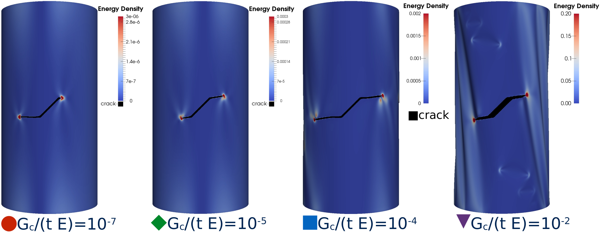

Esta obra está bajo una Licencia Creative Commons Atribución-NoComercial-CompartirIgual 4.0 Internacional
Clases
Paraphrasing Prof. T. J. Lardner we hope, too, that this course has maintained the tradition of engineering thinking, a tradition which M. A. Biot* refers to as the "... tradition of clarity, simplicity, intuitive understanding, unpretentious depth, and a shunning of the irrelevant."
*M. A. Biot, Science and the Engineer, Appl. Mech. Rev., vol. 16, no. 2, pp. 89-90, February 1963.
- Programa de Mecánica de los Sólidos 2020
- MecaSol-Sheet
- Unidad 0
- Unidad 1-A
- Unidad 1-A. Frenos.
- Unidad 1-B
- Unidad 1-C
- Unidad 2-A
- Unidad 2-B
- Unidad 2-C
- Unidad 3-A
- Unidad 3-B
- Unidad 4-A
- Unidad 4-B
- Unidad 4-C
- Unidad 5-A
- Unidad 5-B
Las clases estarán disponibles en los siguientes enlaces a medida que se vayan dictando.
Propación de fracturas en placas frágiles
Análisis del efecto de las características geométricas de una placa plana frágil levemente ondulada, con una pre-fractura sometida a tracción, considerando un modelo de Kirchhoff-Love y pequeñas deformaciones. La forma de la lámina delgada contribuye a incrementar la resistencia a la propagación de la fractura. Es evidente de las curvas de fuerza de reacción en función del desplazamiento aplicado, que la textura geométrica de la placa delgada induce un aumento de la tenacidad aparente del material. A nivel estructural, la presencia de las protuberancias disminuye la rigidez de la placa, pero mejora considerablemente la disipación de energía de falla, como se muestra en las curvas de fuerza - desplazamiento. El mapa de colores describe el campo de fase empleado para modelar la fractura.
Competencia entre modos de falla

Competencia entre propagación de fractura y pandeo en una cáscara cilíndrica frágil empotrada en sus extremos sometida a torsión. En la figura se representan las curvas que delimitan la transición entre estos estados de falla de acuerdo a los parámetros geométricos, materiales, y del ángulo y longitud de la fractura inicial. En particular es posible observar que dada una cáscara cilíndrica con geometría constante, con una fractura inicial β = 45º, es posible observar la transición desde un fallo por propagación de fractura a otro donde antes ocurre el pandeo de la estructura, esto se logra modulando la relación adimensional Gc/(tE) desde 10-7 a 10-2 (desde abajo hacia arriba).
Ver película en web (clickme).



Esta obra está bajo una Licencia Creative Commons Atribución-NoComercial-CompartirIgual 4.0 Internacional